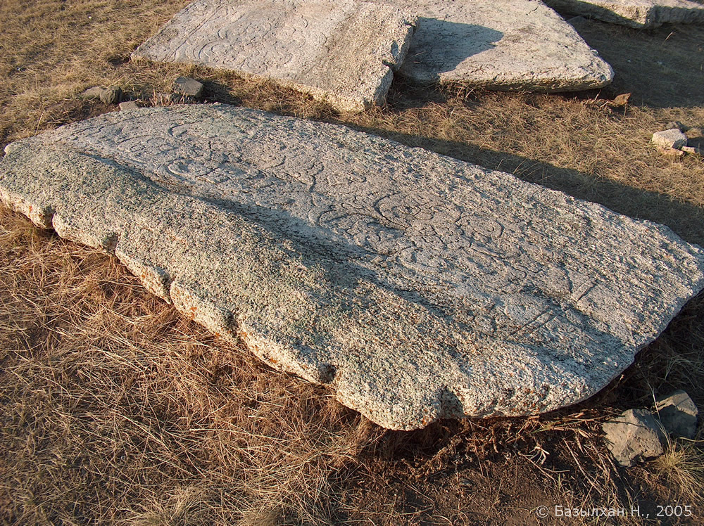
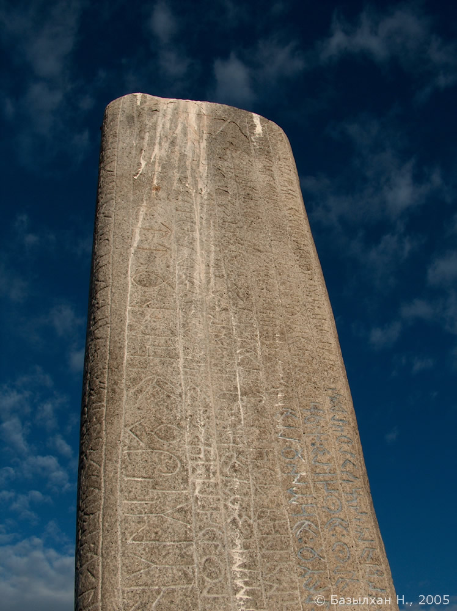
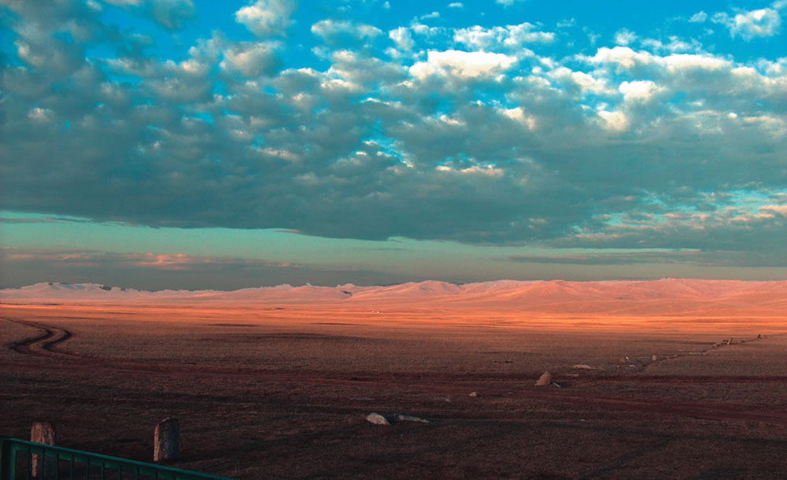
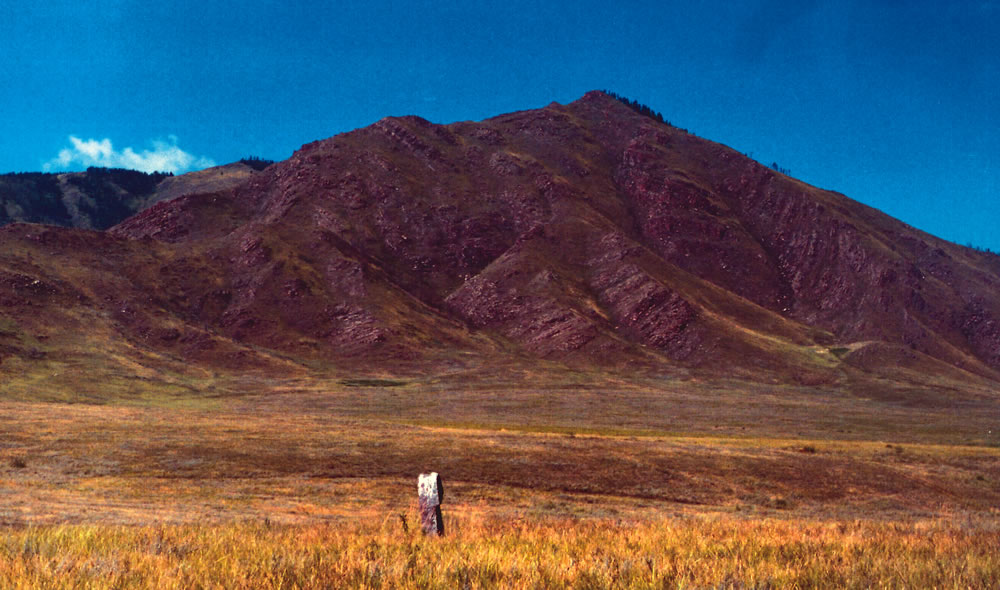

Күлтегін (685 - 731)
Жері
Ескерткiш Моңғолия елiнiң қазiргi астанасы Ұланбатырдан 400 км оңтүстiк-батысында, ежелгi Қарақорым қаласынан 45 км солтүстiкте, Орхон өзенiнiң сол жағалауындағы кең далада орналасқан.
Анықтама
Қытай деректерінде "Кюе-деле" деп аталған
Түрiк Елінің жиһангер қолбасшысы.
Орхон өзенi бойындағы Өтүкенде туған.
Құтлық (Елтерiс) қағанның екiншi ұлы, Бiлге қағанның туған iнiсi.
Шешесi Елбiлге қатұн, ачынұ тектi.
Дереккөз
Н.Базылхан, "Түрiк Бітік" бағдарламасы.


Білге (685 - 731)
Жері
Ескерткiш Орхон өзенiнiң сол жағалауындағы Күлтегін кешенінен оңтүстік-шығысқа қарай 500м жерде орналасқан.
Анықтама
Қытайша "Бике кэхань" деп аталған түрік елінің 717-734 жылдары билік құрған қағаны. Орхон өзенi бойындағы Өтүкенде туған. Құтлық (Елтеріс) қағанның үлкен ұлы, Күлтегіннің ағасы. Шешесі Елбілге қатұн, ачынұ текті.
Дереккөз
Н.Базылхан, "Түрiк Бітік" бағдарламасы.


Тоныкөк (646 - 732)
Жері
Моңғолия елiнiң қазiргi астанасы Ұланбатырдан 65 км шығыс-оңтүстiкте, бүгiнгi Баян-Зүрх тауының батыс-солтүстiгiнде Цагаа Овоо деген жерде орналасқан.
Анықтама
Қытай деректерінде "Тон-йо-гу" деп аталған сұңғыла тұлға. Түрiк елінің Елтерiс, Қапаған, Бiлге қағандарына бiлiктi данышпан болған. Туыл өзенi бойында туған.
Дереккөз
Н.Базылхан, "Түрiк Бітік" бағдарламасы.







Ырқ Бітік (930)
Жері
ҚХР-дың Шынжан автономиясы, Тұрпан, Дүнхуан, Миран өңірлерінде табылған қағаздағы ескертіштер. Шамамен 9-шы ғасырға тиесілі.
Анықтама
Ең үлкені 62 парақты "Ырқ Бітік" туындысы. Кітаптін басы мен аяғы қытайша, арасындағы 58 парақ түркше жазылған. Кітап қазір Британ кітапханасында (Лондон) сақтаулы. Бұрада кейбір беті ғана көрсетілген.
Дереккөз
Н.Базылхан, "Түрiк Бітік" бағдарламасы.


Қашау
-
Қашауға арналған алғашқы саймандарым.

-
Қызыл және көк гранитке қашалған таңбалар. Ақ акрилмен боялған.


-
Қызыл гранитке қашалған таңбалар. Алтын және күміс акрилмен боялған.